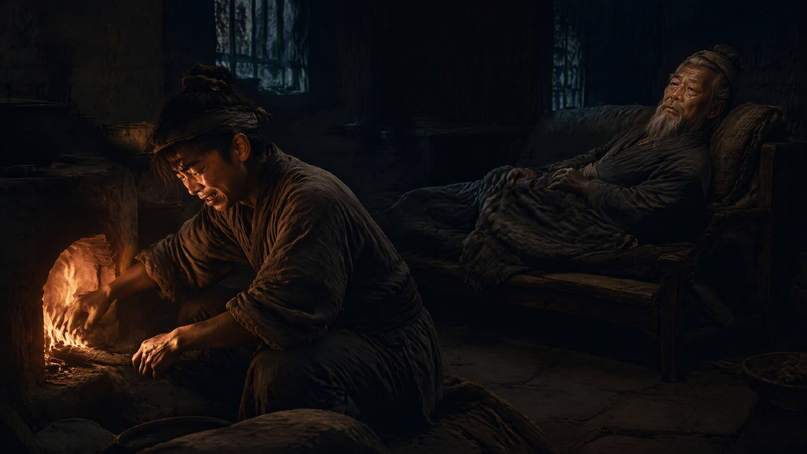

火焱之殁

火焱是在一个冬天的清晨走的。
走之前，他还让火承把灶火烧得旺了些。他说天冷，火别断了。火承蹲在灶前添柴，添着添着，眼泪就掉了下来——他听见爷爷在身后，忽然说了一句：“承儿，火，看好了。”
那是火焱最后一句话。
他坐在那把陪了他几十年的旧藤椅上，面朝那口烧了七十六年的老灶，眼睛望着灶膛里跳动的火，慢慢地，闭上了眼。
火承跪在灶前，不敢出声。他伸手探了探爷爷的鼻息——已经没了。可爷爷的手还是温的，脸还是红的，是被灶火映的。那口老灶还在烧，火烧得又旺又稳，像是舍不得让这个守了它一辈子的人，走得太冷。
百曲的人，是当天上午知道的。消息传开，全村的人都来了。老人们抹着泪，年轻人低着头，孩子们躲在大人身后，怯怯地往里望。他们都知道，火家那个烧了一辈子灶的老人，走了。
海妹是被人搀着来的。她已经八十多了，牙都掉光了，可那双眼睛还是亮的。她走到火焱面前，站了很久，没有哭。她只是伸出手，把火焱身上那件旧棉袄的领子，往上掖了掖——像几十年前，在芦苇荡里，她给这个比她小几岁的“火家哥儿”披衣服那样。
“火家哥儿，”她哑着嗓子说，“你这一走，百曲的灶，往后谁来看啊。”
没有人回答她。只有灶膛里的火，噼啪地响了一声。
赤老温也来了。他已经老得背都直不起来了，可还是让儿子扶着，走到火焱面前，用蒙语低低地说了一句什么。火承听不大懂，可他知道，那是草原上送别长者的话——大意是，火回家了。
火焱的葬礼，办得简单，也办得隆重。简单，是没有大操大办，就按火家自己的规矩，一口薄棺，一方黄土，葬在赤伯升和陈老爹的坟旁，面朝大海，也面朝百曲的灶烟。隆重，是送葬那天，百曲上千户人家，家家户户的灶，都提前一个时辰升了火。上千缕炊烟，从村子的各个角落升起来，在火焱的坟头上空，聚成了一片遮天的烟云。
有人说，那是火焱在人间，最后看见的景象。
火承在坟前，把那口老灶里烧剩的火种，分成了上千份，装进一个个瓦罐里，一户人家分一罐。他说，这是火家老祖传下来的火，往后，谁家的灶冷了，就用这火种引一下。
百曲的人，都收下了。
从此，百曲上千户人家，家家户户的灶里，都烧着同一团火。
火焱走后的第一个春天，义学的孩子们照常开学。火承站在讲台上，翻开书，教孩子们念的，还是那篇《孟子》：“穷则独善其身，达则兼济天下。”
念到一半，有个孩子忽然举手问：“先生，火爷爷说，火家的火，是灶，是书，是心。那火爷爷走了，火家的火，还在吗？”
火承放下书，看着那孩子，又看看满堂的学生，缓缓地说：
“在。火爷爷走了，可火家的火，还在。它在你们每个人的灶里，在你们每个人的书里，在你们每个人的心里。只要你们还读书，还种田，还烧灶，还记得自己是从百曲走出去的——火家的火，就永远不会灭。”
孩子们似懂非懂地点了点头。可他们知道，从此以后，他们要替那个姓火的老人，把火，继续烧下去。
那天傍晚，火承独自走到老屋的灶前。他蹲下来，添了把柴，把火拨旺。火光跳起来，映着墙上那把蒙了灰的黑弓，映着供桌上直脱儿的牌位，映着那两块烧了几十年也没灭的旧砖和炉心石。
“爷爷，”火承轻声说，“您放心。火家的火，孙儿接着烧。”
灶膛里的火，赤红赤红地跳着。
窗外，百曲上千户人家的炊烟，正一缕一缕地升起来，升进暮色里，升进一个再也回不去的、也永远忘不掉的过去。
火焱，这个从松江城灶房里走出来的孩子，这个九岁就在刀口下认了“火”姓的孩子，这个烧了一辈子灶、打了一辈子铁、跑了一辈子海、读了一辈子书的老人——他走了。
可他的火，留了下来。
留在了百曲的每一口灶里，留在了义学的每一页书里，留在了每一个姓火、姓赤、还有那些本不姓火、却因他而记住了“火”的人心里。
一个人，活成了一团火。
火不熄，人不灭。
这一世，他值了。
· 第五卷《祖境》 ·